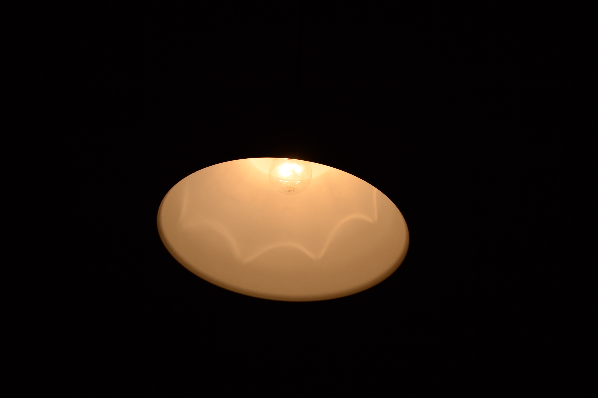
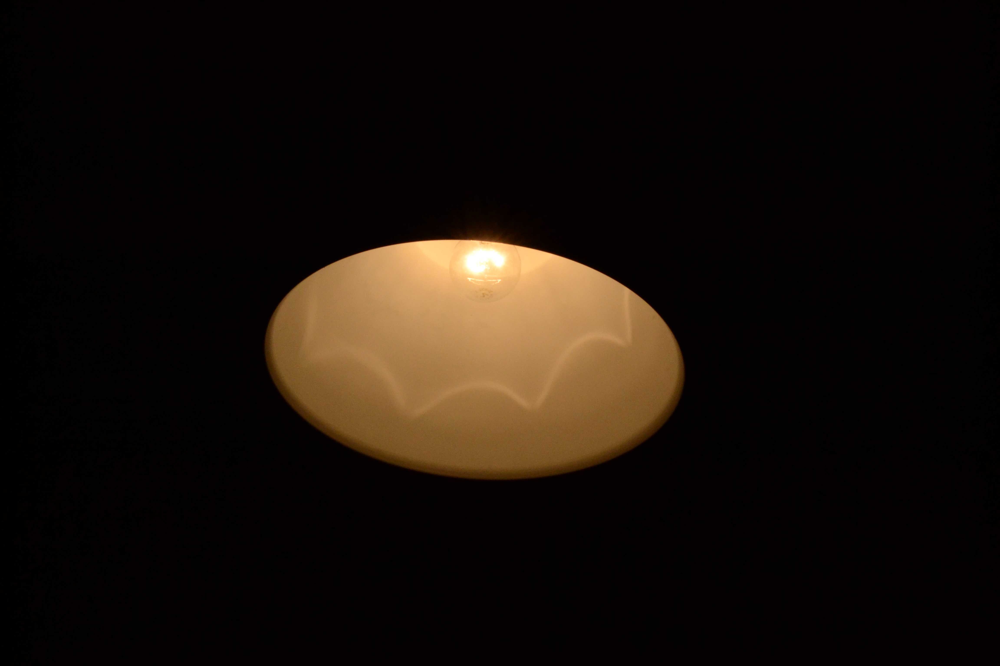

En nuestra cámara si seeleccionamos el modo manual de la cámara podremos ver que tenemos tres variables que podremos ajusutar a nuestro deseo. Estas variables son:
El balance de blancos en un ajuste algo complejo,lo recomendable es tenerlo siempre en automatico.Independientemente de ello la forma de ajustarlo es distinta en cada camara. En si la definicion de este es ¿Qué blanco toma de referencia para ajustar la temperatura o calildez de la imagen.
O explicado de una forma más simple el tiempo que tarda en hacer una foto,y explicado de una forma más tecnica,el tiempo que el sensor esta recibiendo luz. este parámetro va desde treinta segundos con el oturador abierto a un cuatromilesimo de segundo (1/4000).
¿Qué nos indica la aperrtura?La apertura visto de esta forma seria cuanto de aierta tenemos la pupila del ojo a mayor apertura más cerrada la pupila a menor apertura más dilatada la pupila.En definitiva limita la cantidad de luz que entra en el sensor.
El ISO no es un componente físico como tal,el iso es la sensibilidad del sensor a la luz,a mayor sea el número más sensible sera el sensor. a elevados isos la imagen tiende a llenarse de ruido(el ruido es la variacion de brillo de forma aleatoria en multitud de puntos)
Dependiendo de como los ajustemos podemos llegar a obtener la misma foto pero con valores distintos,siempre que esten bien ajustados. Aquí va un ejemplo de dos fotos iguales pero,con diferentes:
| FOTOS A COMPARAR | |||||
| Lámpara con bombilla de 100 wats | |||||
| imagen número 1 de ejemplo | imagen número 2 de ejemplo | ||||
|  |  | ||||
| ISO | APERTURA | VELOCIDAD DE OBTURACION | ISO | APERTURA | VELOCIDAD DE OBTURACION |
| 100 | F 5.6 | 1/200 | 1600 | F 32 | 1/200 |